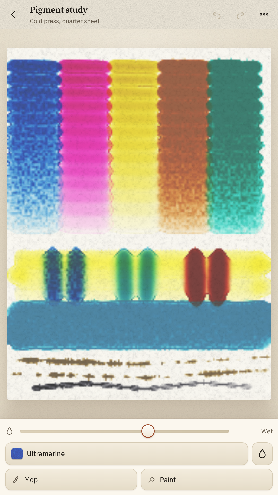
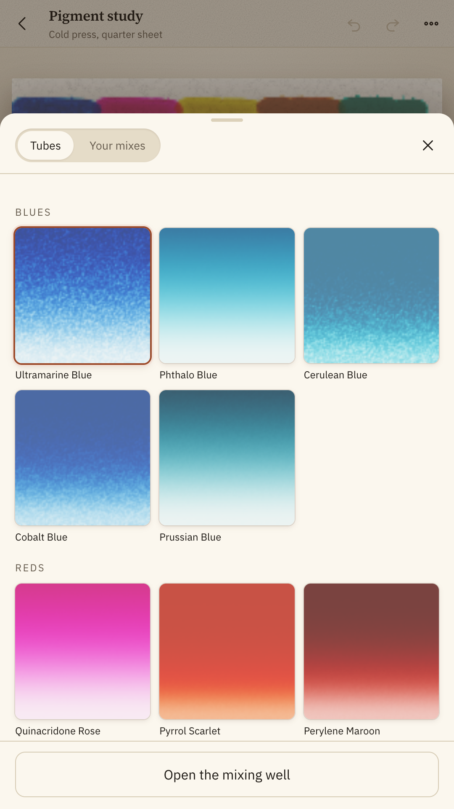
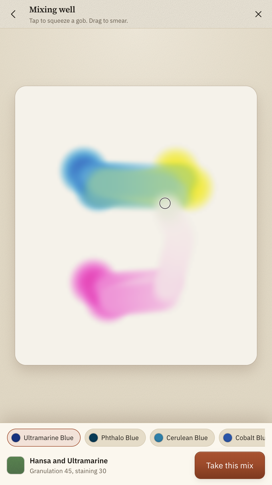
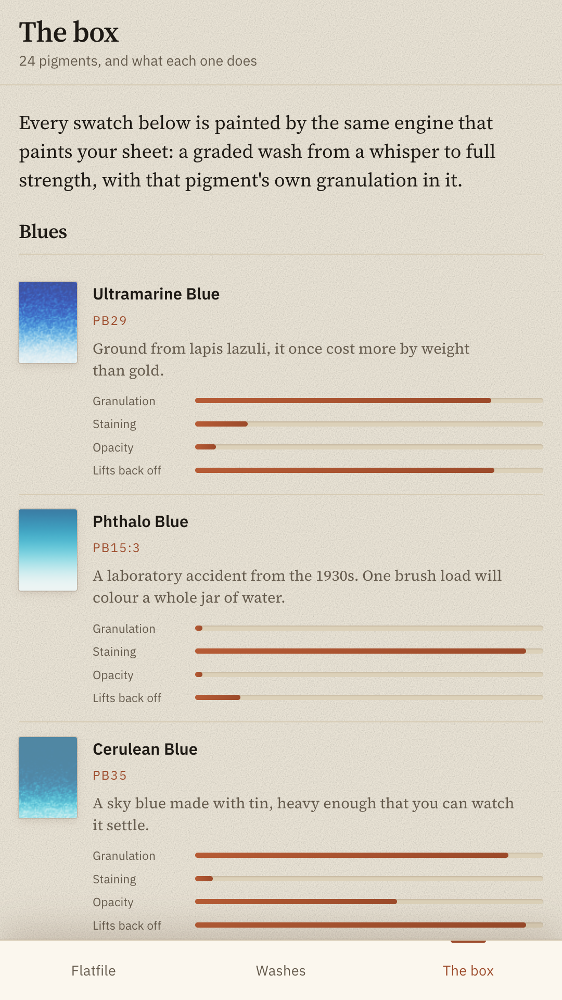
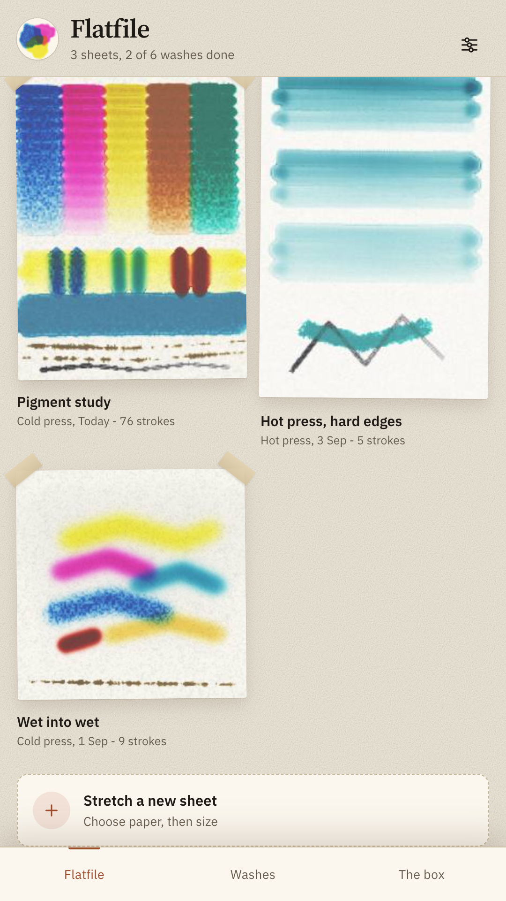
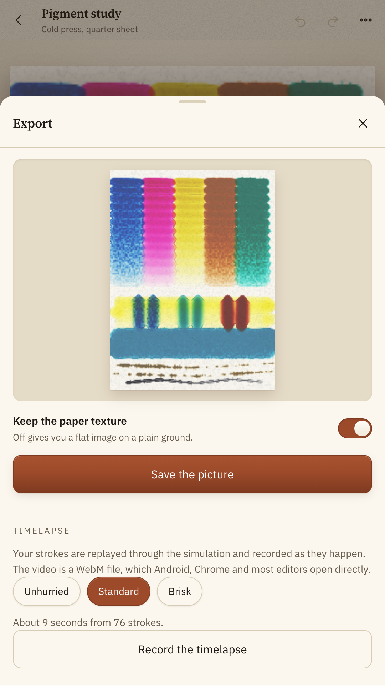

A watercolour studio where the water is simulated, the paper has tooth, and every colour in the box is a named pigment with its own way of misbehaving.
Get it on Google PlayFree and complete. Every pigment unlocked from the first launch. No account, no subscription, and no internet permission.

Every other painting app averages two RGB values and hands you grey. Pigment gives each paint a Kubelka-Munk absorption vector and a scattering strength, the way a manufacturer measures one, and adds them by mass. That green above was not chosen by anybody. It is the arithmetic.

A shallow water simulation runs under the canvas at about thirty steps a second. It only touches the parts of the sheet where something is happening, so a drying wash in one corner costs almost nothing.
Water runs downhill and wicks sideways into dry paper, faster into the low ground of the tooth than over the high ground.
A wash loses water faster at its rim than in its middle, which drags pigment outward and leaves the hard dark line every painter recognises.
Pigment moves with the water but slightly slower, so the wet edge always arrives before the colour does.
Drop clean water into a wash that has just lost its shine and the fresh water lifts what was settling and pushes it out into a ragged rim. That is a backrun, and it is not a bug.
Switch on tilt flow and the phone's own tilt sensor becomes the direction that down is. Lean the phone and the wash runs.
Granulation, staining, opacity and how well a colour lifts back off are properties of the paint, printed on the side of a real tube. Here they are numbers the engine actually reads.
| Pigment | Granulates | Stains | What that means on the sheet |
|---|---|---|---|
| UltramarinePB29 | Heavily | Barely | Settles into the valleys of cold press and leaves the hills pale. Comes back off with a damp brush weeks later. |
| Phthalo BluePB15:3 | Not at all | Ferociously | Smooth, transparent and permanent. Once it is down it is down, and it will take over any mix you put it in. |
| Cerulean BluePB35 | Heavily | Barely | Opaque and heavy enough that you can watch it drop out of the water. Lifts out cleanly for clouds. |
| GoethitePY43 | As much as anything can | Not at all | Natural iron ore, coarsely ground. A flat wash of it dries as a map of the paper it was laid on. |
| Quinacridone RosePV19 | Not at all | Deeply | Glazes like coloured glass. Layer it over a dry wash and the wash underneath still shows through. |
| Lunar BlackPBk11 | As much as anything can | Not at all | A magnetic iron black so coarse that a wash breaks into craters as the water leaves it. |
Choose the paper before the subject. Mix on a ceramic palette. Keep the sheets in a drawer. The interface stays out of the way, because the only saturated thing on the screen should be the paint.




A sheet is not saved as an image. It is saved as the log of every stroke: which brush, which paint, how much water, and the milliseconds between the points. A painting of seventy strokes is about twenty kilobytes of stroke log.
Plainly
Vibrate. A tick when a wash has finished drying, a fainter one under a dry brush. Switch it off in the settings if you would rather not feel any of it.
Pigment does not request the internet permission, so Android will not let it open a connection at all. You can check that on the Play listing before you install.
No account, no analytics, no advertising ID, no crash reporter. Your paintings, your mixes and your settings live in this phone's private storage and nowhere else.
All twenty four pigments, all three papers, all eight brushes, unlimited sheets, watermark free export. There is no subscription and no in app purchase.
A pen reports real pressure and the brush answers it. A finger works too and is tuned separately, but the pressure is assumed rather than measured.
Mistakes are the best thing that happens on a wet sheet.
Get it on Google Play